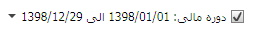
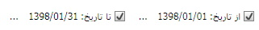
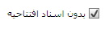
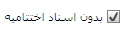
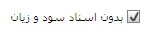
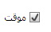

در صفحه مربوط به این منو می توانید «تراز آزمایشی»، «تراز نامه» و «صورت سود و زیان» را تهیه کنید، وقتی وارد بخش گزارشات تراز سود و زیان می شوید صفحه ی زیر نمایان می شود:

در صفحه ی بالا سه تب وجود دارد که با ورود به آن ها می توانید گزارشات خود را تهیه کنید.
تراز آزمایشی در دو سطح تهیه می شود، در سطح کل و سطح معیین ، در این قسمت می توانید سطح را تعیین کنید.
در این قسمت می توانید دوره مالی مورد نظر خود را تعیین کنید.
در این قسمت می توانید تعیین کنید که سیستم در چه بازه تاریخی گزارش تراز آزمایشی را تهیه کند.

اگر هر یک از فیلتر های نما، لایه و یا تفصیل را اعمال کنید سیستم تراز آزمایشی را بر مبنای فیلتر اعمال شده ارایه می دهد.
می توانید گزارش تراز ازمایشی را بدون در نظر گرفتن اسناد افتتاحیه نیز تهیه کنید در این صورت باید روی این گزینه کلیک کنید.
اگر قبل از تهیه تراز آزمایشی اسناد اختتامیه را محاسبه و ثبت کرده باشید حساب ها بسته شده و مانده آنها صفر می شود و در گزارش تراز آزمایشی نیز مانده حساب ها صفر نشان داده خواهد شد. برای اینکه در گزارش مانده حساب ها صفر نشوند و مانده حساب ها نمایش داده شوند باید روی این گزینه کلیک کرده و گزارش تراز آزمایشی را بدون در نظر گرفتن اسناد اختتامیه تهیه کنید.
می توانید گزارش تراز آزمایشی را بدون در نظر گرفتن اسناد سود و زیان نیز تهیه کنید در این صورت باید این گزینه را فعال کنید.
پس از تنظیمات دلخواه با کلیک روی "گزارش" می توانید تراز آزمایشی را تهیه کنید.
برای تهیه تراز نامه درست مانند تهیه تراز آزمایشی عمل کنید
فیلترهای تب تراز نامه مشابه فیلترهای تب تراز آزمایشی می باشند
این تب تنها یک فیلتر متفاوت دارد که در زیر آن را شرح می دهیم:

اگر این گزینه فعال نباشد ترازنامه بدون احتساب حساب های موقت
نمایش داده می شود در نتیجه دو طرف ترازنامه با هم برابر نخواهد بود
اما اگر این گزینه را فعال کنید سیستم حساب های موقت را به حساب
سود و زیان جاری می بندد و به بخش حقوق صاحبان سهام اضافه می کند
در نتیجه دو طرف ترازنامه برابر می شود.
برای تهیه صورت سود و زیان نیز مانند دو تب قبل عمل کنید،
در مورد این گزارش توضیحات زیر را در نظر بگیرید:
اگر بعد از محاسبه و ثبت سند سود و
زیان بخواهید گزارشی از سود و زیان تهیه کنید در این
گزارش مقدار حساب ها صفر خواهد بود چون پس از محاسبه
و ثبت سند سود و زیان مانده حساب های موقت صفر شده و
این حساب ها بسته می شوند. لذا برای این که بتوانید
گزارشی از سود و زیان پس از محاسبه و ثبت سند سود
و زیان تهیه کنید، باید در صفحه مربوط به تهیه و
چاپ سود و زیان روی گزینه «بدون اسناد سود و زیان»
کلیک کنید تا سیستم بدون در نظر گرفتن اسناد سود
و زیان گزارشی از سود و زیان در اختیارتان قرار دهد.